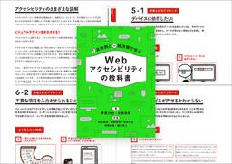
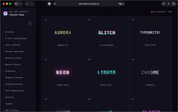
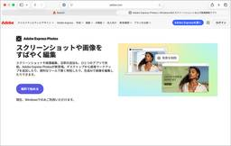

コリス
https://coliss.com
Web制作に関する最新の情報をご紹介
フィード

Webの制作現場ですぐに役立つ情報が満載！ アクセシビリティへの取り組みを解説した良書 -Webアクセシビリティの教科書 1
1
コリス
※本ページは、アフィリエイト広告を利用しています。 Webのアクセシビリティってなんだか難しそう、つい後回しにしてしまう、そんな人もいるかもしれません。 難しく考える必要はありません。より多くの人が、より快適にアクセスで […]
2日前
JIS第1水準の漢字までほぼ完備！ ゆる～い感じがかわいい、おやつ屋さんが作った手書きフォント -おやつぽっけフォント 3
コリス
ゆる～い感じがかわいい、手書きの日本語フリーフォントを紹介します。 「おやつぽっけフォント」はひらがな・カタカナ・英数記号文字はもちろん、JIS第1水準の漢字までほぼ完備されています！ おやつぽっけフォント まずはさっそ […]
3日前
1Password値上げ前の購入にお勧め！ ソースネクスト30周年記念セールで、1Passwordが驚くほど安くなっています 4
コリス
※本ページは、アフィリエイト広告を利用しています。 1Password公式の値上げのペースがすごい勢いですね。 今年の5月に値上げされ、さらに11月にも値上げが予定されています。しかも11月は、4,050円/年が8,20 […]
4日前

全部コピペで簡単に実装できる！ CSSで実装された、トレンドのテキストエフェクトをまとめたライブラリ -CSS Text Effects 16
コリス
ピュアCSSで実装された66種類のテキストエフェクトをまとめたライブラリを紹介します。JavaScriptや外部ライブラリへの依存はなし、HTMLとCSSだけで実装されており、コピペで簡単に利用できます。 幻想的なオーロ […]
5日前

Adobe Acrobatの自動更新が有効になっていると、Adobe Express Photosが勝手にインストールされる件 38
コリス
Windows環境でAdobe Acrobatの自動更新が有効になっていると、Adobe Express Photosが勝手にインストールされようになりました。 しかもこのAdobe Express Photosはアンイ […]
6日前

セール初登場がたくさん！ Kindle本の超ビッグセールが開催、デザイン、Web制作、イラストの良書が文句無しの最安値
コリス
※本ページは、アフィリエイト広告を利用しています。 Amazonで、Kindle本 サマーセール第2弾が開催です！ Webや紙のデザイン、HTML/CSSなどWeb制作の解説書、同人誌・絵師さん向けのイラストの良書がたく […]
13日前
まさに仕事で使えるAI解説書の決定版！ Gemini Notebook（NotebookLM）が使いこなせるようになる -AI仕事最速大全
コリス
※本ページは、アフィリエイト広告を利用しています。 8月4日にGemini Notebookの超大型アップデートがアナウンスされました！ 今まさに注目されているGemini Notebookの仕事で便利に使いこなすテクニ […]
16日前
CSSの進化がすごい！ JavaScriptなしで、遷移元と遷移先で異なる挙動を実現するルートとナビゲーションの連携機能
コリス
HomeページからAboutページに移動する際はページ全体が左にスライド、AboutからHomeに戻る際は右にスライド、このように同じナビゲーションを使用して遷移元と遷移先で異なる挙動を実装するにはJavaScriptが […]
17日前
最近のデバイスに対応したブレイクポイントがすぐに分かる！ レスポンシブを設計する際に役立つツール -ScreenSize.net
コリス
各デバイスのスクリーンサイズの一覧表、ブレイクポイントはいくつに設定すればいいのか、ブレイクポイントが機能しているかなど、レスポンシブを実装する際に役立つツールがまとめて利用できるScreenSize.netを紹介します […]
18日前
Web制作者は要チェック！ カメラにアクセスできるusermedia要素など、Chrome 151で追加された6個の新機能
コリス
先週アップデートされたChrome 151に追加された、HTML/CSSとUIに関する新しい機能を紹介します。 今回のアップデートで注目すべきは、カメラやマイクにアクセスできるusermedia要素、position-a […]
19日前